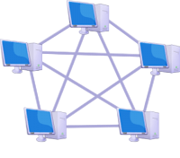

¿Qué es la topologia en Malla?
La topología de malla es una configuración de red en la que los dispositivos están interconectados entre sí, ofreciendo múltiples rutas para la transmisión de datos, lo que mejora la redundancia y la fiabilidad. Si un enlace falla, los datos pueden seguir por un camino alternativo.
Las ventajas incluyen alta tolerancia a fallos, mientras que las desventajas incluyen la complejidad, el alto costo de implementación y el mantenimiento debido al gran número de cables y conexiones necesarios.

Ventajas y Desventajas de la Topología en Malla
Ventajas

- Alta redundancia y fiabilidad: Existen múltiples caminos para los datos, por lo que si un enlace falla, la red puede seguir funcionando utilizando rutas alternativas.
- Rendimiento robusto:La capacidad de enviar datos por distintas vías puede mejorar la velocidad y eficiencia, especialmente en redes grandes.
- Tolerancia a fallos: La red es resiliente y no se cae por completo si un único nodo o cable falla.
- Escalabilidad: Es relativamente fácil añadir nuevos dispositivos a la red sin interrumpir el funcionamiento.
Desventajas

- Costos elevados: Se necesita una gran cantidad de cableado, ya que cada nodo puede estar conectado a varios otros, lo que incrementa significativamente el coste de instalación.
- Complejidad: La instalación y gestión de una red con tantos enlaces puede ser muy compleja.
- Carga de trabajo: Cada dispositivo puede requerir más recursos de procesamiento para gestionar las múltiples conexiones.